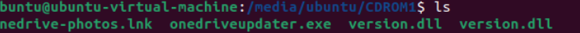
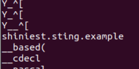
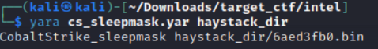
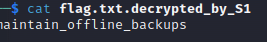

Recently I completed Tier 1 of Target’s Cyber Defense Challenge offered to members of the WiCys (Women in Cybersecurity) organization. It was a CTF comprised of four categories: cryptography/steganography, reverse engineering, USB forensics, and cyber threat intelligence. In this fourth part, I will go over the challenges in the Cyber Threat Intelligence.
NOTE: Some of these flags may be slightly off because I didn’t actually record the exact string that worked, but the process should be around the same
WHOIS responsible for this IP address?
100 points
The incident response team has identified an IP address that several infected hosts have been communicating with:
165.227.251.183As part of the investigation, you’ve been tasked with identifying the company that owns this IP address.
This was a simple lookup.
Flag: Digital Ocean
References
https://ipinfo.io/AS14061/165.227.248.0/22
Don’t sweat the MITRE technique
100 points
The incident response team has identified a suspicious command being executed on several infected hosts:
nltest /domain_trusts /all_trustsTo help determine what the adversary is up to, you’ve been asked to identify the MITRE ATT&CK technique ID associated with this activity.
I searched for the command and clicked on the first link, which lead to the page on Domain Trust Discovery, Technique T1482.
Flag: T1482
References
https://attack.mitre.org/techniques/T1482/
ISOlate the domain
200 points
A fresh SHINY SCORPION campaign is attaching variations of
onedrivephotos.iso, but it doesn’t seem to do anything in your sandbox.If you were able to get the malware running, what C2 domain would it try to contact?
_Note: The “malware” in this challenge is custom-written and benign but simulates malicious behavior, which will almost certainly cause some AV products to flag it. Exercise caution if downloading on a work/school computer!
Challenge file:
onedrivephotos.iso| SHA-256:9f1eb0a100615cdda44a13f434627f8978d133ca4ef4a002809f95dcc8d24ff6
Note: this is a pretty cheesy solution
The ISO attached included several files:

To investigate further, I ran strings on all the files. In version.dll, I found this domain:

Flag: shiniest.sting.example
The writers are on Cobalt Strike and this is the best pun I could come up with
200 points
There have been reports that the most recent SHINY SCORPION campaign has begun avoiding detection by leveraging Cobalt Strike’s upgraded sleep masking functionality.
The hunt team has collected several relevant samples, but doesn’t know which of them is part of this new campaign:
- “haystack.zip”; SHA256:
09b53d52d39d8a941835ff7e92dacfe9abe4e82add69851ff968c1011a0e213bThe threat detection team wants to know the new domain this campaign is using for command and control.
Note: The “malware” here is custom-written and benign but simulates malicious behavior, which could cause some AV products to flag it. Exercise caution if downloading on a work/school computer!
Challenge file:
haystack.zip| SHA-256:09b53d52d39d8a941835ff7e92dacfe9abe4e82add69851ff968c1011a0e213b
For this challenge, I had to explore a bit before arriving at the flag. At first, I wasn’t sure what to do. I first tried to run strings on all the files and go through the output using a diffchecker. However, I would have to go through 20 files and I knew that this was inefficient and probably not the right way to approach the solution. I ended up leveraging two tools: Yara and VirusTotal. I had experience with VirusTotal but was not familiar with Yara.
I tried some Yara rules on the files, but they didn’t detect anything so I thought it wasn’t the right tool.
I uploaded haystack.zip in VirusTotal. At first I tried to submit the domains contacted, but they were wrong. From there, I pivoted to the report by Zenbox under the Full Reports tab in VirusTotal. In the Dropped Info tab, there was information about each file. I went through the first file and saw a domain which looked suspicious. I got too excited and tried to submit that too but it was wrong. I think I’m learning to be more patient and to trust your gut instincts. From there, I collected all the domains from each file. I was stuck after that. I didn’t know what differentiated them. So I went back and reread the challenge and looked more into the Cobalt Strike Sleep Mask Kit. I realized that maybe I was leveraging Yara wrong and found a sleep detection rule from CodeX. I then ran that on the directory and immediately got this output:

This corresponded with the blue.venom.sting.example domain.
Looking back at this challenge, if I knew how to properly use Yara and VirusTotal, this probably would’ve been a very easy flag. I’m glad that I got to build up the experience!
Flag: blue.venom.sting.example
References
https://github.com/CodeXTF2/cobaltstrike-sleepmask-yara.
Can I copy your ransomware? Yeah just don’t do it opcode for opcode.
300 points
The SHINY SCORPION has stung again! Fortunately for us, they were lazy this time and copied another ransomware gang’s homework, including their mistakes!
Can you find a way to decrypt flag.txt and save our data?
Note:
sting.binis custom-written and benign but simulates malicious behavior, which could cause some AV products to flag it. Exercise caution if downloading on a work/school computer!Challenge files:
flag.txt| SHA-256:f8e1365ba60efd2385ea0a206ef55c0bd669b91f0fc5f93383faa5c30da173bbflag.txt.C_I_0P| SHA-256:46e2e5c14f48ad049937ce20d606251b5ada8b9d930174579926241625e0f790sting.bin| SHA-256:587da185780edc95b1e1e0a5ee54f9002f60abc556ee7f6dfbe15108ac87c9cb
I was stuck for a few days on this challenge as initially I was focused on research opcode frequency. I stopped focusing on opcodes and started researching ransomware gangs to figure out which one shiny scorpion was copying. On a closer look at the files given, I kept wondering, what is the .txt.C_I_OP extension? It just didn’t make sense to me. Then, it suddenly clicked. I heard of this ransomware gang called CL0P and I had a lead.
One of the indicators of the CL0P ransomware was the file extension names. The ransomware given was a copy of the ELF variant of CL0P targeting Linux systems.
The Windows utilized a Mersenne Twister PRNG to generate a 0x75 byte size RC4 key for each file which would then be validated and used for file encryption. Then by using the RSA public key, it would encrypt the generated RC4 key and store it to $filename.$clop_extension. Victims who paid the ransom demand received a decryptor which would decrypt the generated CL0P file using the RSA private key, retrieve the generated RC4 key and then decrypt the encrypted file.
In the Linux version, the file contained a hardcoded RC4 master key. By using the RC4 master key, the ransomware would encrypt the generated RC4 key (second RC4) and store it to $filename.$clop_extension. Because RC4 is symmetric, we can also decrypt CL0P ELF encrypted files. Sentinel One provided a python script to decrypt the files.

Flag: maintain_offline_backups
References
https://www.sentinelone.com/labs/cl0p-ransomware-targets-linux-systems-with-flawed-encryption-decryptor-available/ https://github.com/SentineLabs/Cl0p-ELF-Decryptor
Appendix
The writers are on Cobalt Strike and this is the best pun I could come up with
All the domains:
-
blue.scorpion.sting.example https://www.virustotal.com/gui/file/60b3cd6e8521e3951848527e2e152b47c13e32f8296333bb129ed553ccf96c80/behavior
-
purple.venom.sting.example https://www.virustotal.com/gui/file/f490af9e1dc4d0eef0b68eca46c8ced0d8e5350b041bad64f5c785ffdfda54bb/behavior
-
purple.pincer.sting.example https://www.virustotal.com/gui/file/effc32cd0380d6b67f160040e22d59fcaf1cfe0be1e836f8cf133c006089dd29/behavior
-
green.pincer.sting.example https://www.virustotal.com/gui/file/2ac237ae4b29e566e4a9657ebccac951ebf8af97dbe594f93ee22ade53446d17/behavior
-
grey.venom.sting.example https://www.virustotal.com/gui/file/20df44811fde6209ca25632ce8717301775d0fd32749cc2eae3f12f75ba1e66f/behavior
-
green.shiny.sting.example https://www.virustotal.com/gui/file/8e3902f1f5deccc71e92febe177604c3d451d06fc70ea841c549a07568543a7a/behavior
-
yellow.venom.sting.example https://www.virustotal.com/gui/file/622f2e56ad26f52822fe7f7c33c7edaa069b2ce764af80d6b476be2deafc542b/behavior
-
gold.scorpion.sting.example https://www.virustotal.com/gui/file/8fbce64e494e46b34c56efb340f1a7e48871666b34b5997822a36f87ae2c311d/behavior
-
black.venom.sting.example https://www.virustotal.com/gui/file/4a453a03f7321405d0cfd9e4dcf401343605782dbfddb614dd71c83e3014956b/behavior
-
green.venom.sting.example https://www.virustotal.com/gui/file/3d34386d178d9564f9124c124fb1f044a5833a6b06ab181494af7c9322f27edc/behavior
-
blue.venom.sting.example https://www.virustotal.com/gui/file/00f72dfb3a2e844e55e987b53a58e8fbd19473477aa10945b2ddde1aefbb2331/behavior
-
orange.pincer.sting.example https://www.virustotal.com/gui/file/0EC2A6ADFB48BDFC3EF0B48891FA7D5AB7712BF8533AD557D5FEE95D92EF23AC
-
yellow.scorpion.sting.example https://www.virustotal.com/gui/file/69C12861D9C076AD0E798E8CA0D71FA664DFDD0E06363F4F594B6C4EBDB21E87
-
white.scorpion.sting.example https://www.virustotal.com/gui/file/dc1eaeb72270a77f8d5161c5a3c44b24933161afd3b9aef626b5980a075d545c/behavior
-
blue.shiny.sting.example https://www.virustotal.com/gui/file/E5C20A894592C99B2B5933D3953E22114174343BFFE7D5C5E796ACBB7DA70871
-
orange.scorpion.sting.example https://www.virustotal.com/gui/file/5783092092CD5F5C6B7FC9A0CA5D27E3CD77AA5AF5362865B7CA44726B553C02
-
purple.shiny.sting.example https://www.virustotal.com/gui/file/6581e70c3fc187edaf89c3fe190064020123cc564ed49c333d784b90f3589156/behavior
-
grey.scorpion.sting.example https://www.virustotal.com/gui/file/D9171D035B4693B46876CF68DC11A4E10405932BDBD172F4B1189D6DC78F56A1
-
blue.pincer.sting.example https://www.virustotal.com/gui/file/6afd18a1a34d6dbbce112f04db2157fb438885aa7391b93240cdd35fd862ece4/behavior
-
yellow.shiny.sting.example https://www.virustotal.com/gui/file/cd8994278af872d84911b9351b0a6ff55cec81eb85a361fd2dd563cc85f54220/behavior